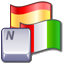

|  | Installing TranslationsHow to install translations of KeePass 2.x. |
To install a user interface translation, follow these steps:
<Language>.lngx file into the KeePass application
directory (where KeePass.exe is located).[Yes].That's it! The user interface is now translated completely into your language!
For some languages (not for all) there is additional localized content available, like translated help files, tutorials, etc. All this content is available from the same page where the user interface translations are downloadable: Translations page.
If you'd like to create some translated content yourself, please first ask the KeePass team if the thing you're planning to create isn't in work already by someone else. If not, you'll make a lot of people very happy by creating translated content!